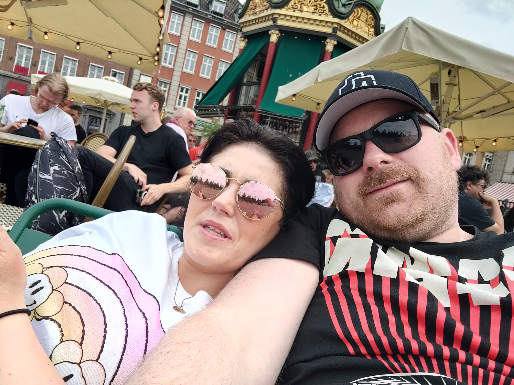

Um Okkur
Fyrirtækið er í eigu Hugrúnar og Jakobs, en þau ákváðu að bjóða upp á leigu á öryggistengdum útivistarbúnaði til að gera þann búnað aðgengilegan fleirum án stórra fjárfestinga. Þau eru bæði í björgunarsveit og þekkja því vel þann búnað sem nauðsynlegur er til að tryggja öryggi fólks á fjöllum.
